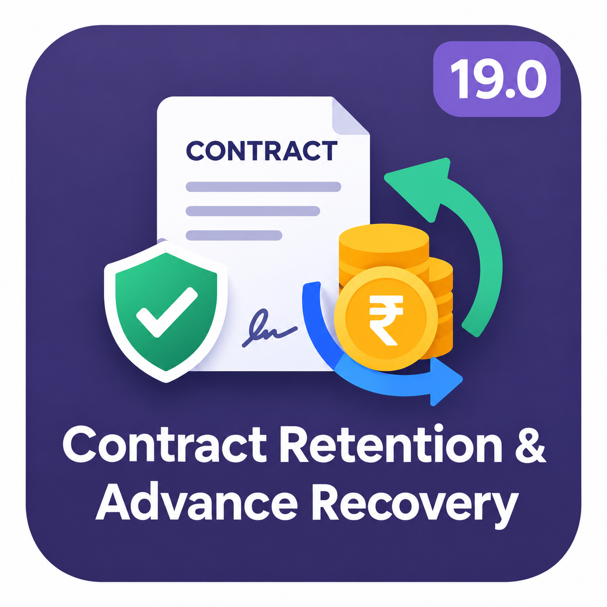

ODOO 19 · ACCOUNTING + SALES Contract Retention |  |
This module separates contract accounting from cash settlement. Do not use one balance as proof of another.
| Balance | What it tells you | What reduces it |
|---|---|---|
| Remaining advance | How much prepaid money is still available for future invoices. | Posted advance recovery and its corrections. |
| Remaining retention | How much contractual retention is still held. | Posted release or retention corrections. |
| Outstanding Receipts | Whether the incoming payment has been matched to bank receipt evidence. | Bank reconciliation—not advance allocation. |
In Accounting settings, open Contract Retention and Advances. Settings are company-specific.
An advance is deliberately assigned to a customer and, when applicable, a sales-order/project context. Registration reclassifies the posted payment’s receivable credit into an advance liability.
Create an incoming customer payment with a posted journal entry. Its receivable credit must be entirely unmatched for registration.
Click Assign Contract Advance, check the assignment, then Register Advance Liability. The assignment becomes immutable.
On a progress invoice, select the registered advance. Choose a percentage of eligible untaxed work or a fixed recovery amount.
Posting transfers the recovered amount out of the advance liability. Recovered increases; remaining advance decreases.
Further invoices can use the remaining advance. Recovery cannot exceed the available advance or eligible untaxed work. Customer, company, currency and project must match the invoice.
Retention and percentage recovery are calculated on eligible untaxed invoice-line subtotals. The gross invoice and tax remain unchanged; contract transfers reclassify the receivable.
ILLUSTRATION ONLY · Untaxed work 10,000 SAR · Tax 1,500 SAR · Retention 10% · Recovery 20%
| Immediate payable before cash | 11,500 − 1,000 − 2,000 | 8,500 SAR |
| Retention deduction | 10,000 × 10% | 1,000 SAR |
| Advance recovery | 10,000 × 20% | 2,000 SAR |
Payable before cash is not the current unpaid residual. Actual cash receipts and reconciliations affect Odoo’s Amount Due separately.
Use Contract Retention → Release Retention to select eligible items, review the amount, and post the release. A release cannot exceed the eligible remaining balance.
| HELD 1,000 SAR Retention asset | → | RELEASED 1,000 SAR Customer receivable | → | COLLECTED LATER Cash receipt Receive and reconcile payment |
Advance recovery settles the contract allocation. The payment’s Outstanding Receipts line still needs its bank counterpart.
| Accounting event | Debit | Credit |
|---|---|---|
| Incoming customer payment | Outstanding Receipts | Accounts Receivable |
| Advance registration | Accounts Receivable | Customer Advance Liability |
| Actual bank receipt | Bank | Outstanding Receipts |
Create Bank Receipt → confirm actual receipt, choose date/journal/reference → create a draft → review and post → return to Reconcile Payment → select the eligible posted Outstanding Receipts credit → confirm the full match.
The Create Bank Receipt button hides once a linked receipt exists. After full bank settlement, Reconcile Payment hides and a Reconciled flag appears. Odoo computes the payment status; the module never forces Paid.
Open Contract Retention & Advance Report. Use Date From, Date To, Company, Customer and Project; click Get Report to generate the table.
Generated From–To range beneath the title
| Gross invoiced | Net held | Released | Advance received | Recovered | Remaining advance |
|---|---|---|---|---|---|
| Customer / company / project / currency buckets with Invoices, Advances and Movements drill-downs | |||||
The module uses posted journal entries and movement records to explain the balances.
MAKE ODOO WORK YOUR WAY
Need Odoo customization, a new feature, or integration with another system? Share what you want to achieve—let’s discuss a solution tailored to your business.
sarusarang02@gmail.comFor Odoo customization and integration enquiries, connect with me by email.